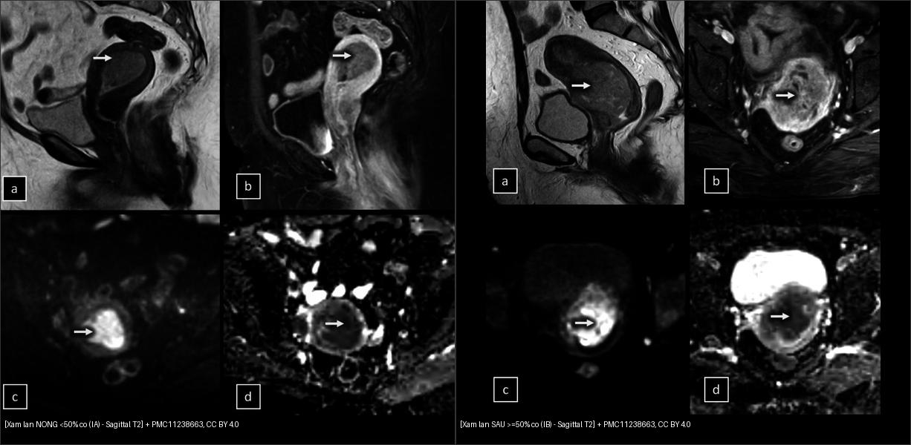
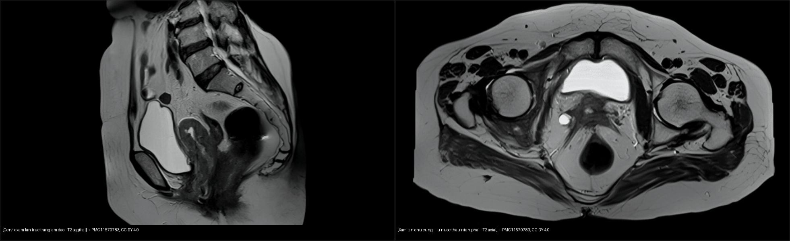
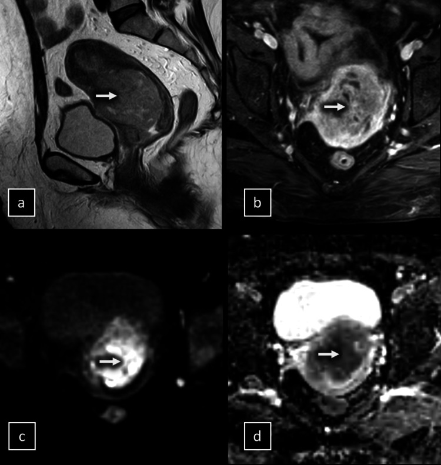
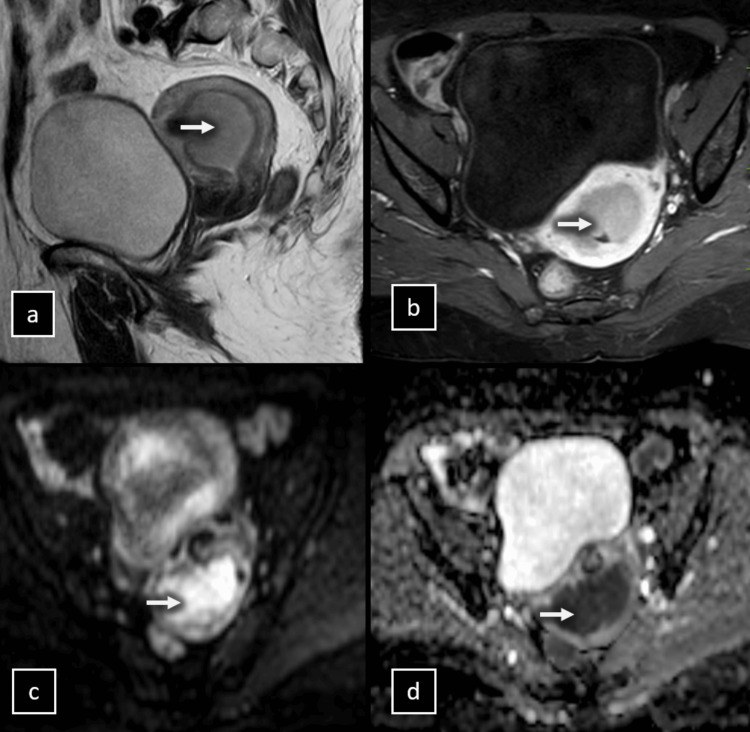
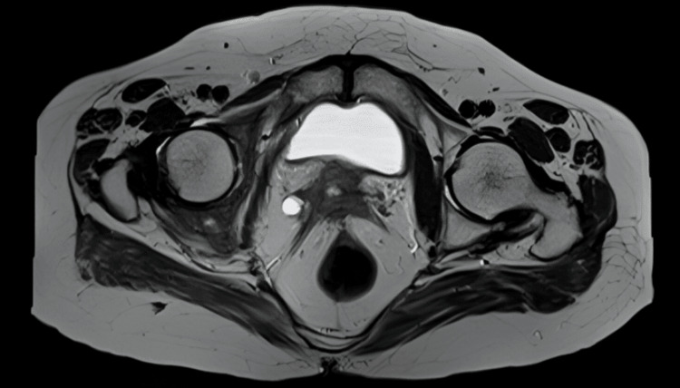

525 — Ung thư nội mạc & cổ tử cung: phân giai đoạn FIGO trên MRI / Endometrial & cervical cancer — FIGO staging on MRI
Tags: pattern:u-noi-mac pattern:xam-lan-co vung:tu-cung score:FIGO protocol:MRI-tieu-khung
Mức chắc chắn (certainty): tổng hợp y văn (literature synthesis) — nhóm tự biên từ các ca mở CC BY (Cureus 2024/2026) + bảng phân giai đoạn FIGO 2023 và tiêu chuẩn MRI, chưa gắn một ca nguyên văn đơn lẻ.
1. Tổng quan — vì sao T2, DWI và DCE đọc được độ sâu xâm lấn cơ
- Ung thư nội mạc tử cung (endometrial cancer) là ung thư phụ khoa hay gặp nhất ở nước phát triển; biểu hiện điển hình ra máu sau mãn kinh (postmenopausal bleeding). Yếu tố tiên lượng quan trọng nhất mà MRI phải trả lời là độ sâu xâm lấn cơ tử cung (myometrial invasion), lấy mốc 50% bề dày cơ; kế đó là xâm lấn mô đệm cổ tử cung (cervical stromal invasion), hạch (nodal) và lan ngoài tử cung.
- TẠI SAO đọc được trên T2W: cơ tử cung bình thường có 3 lớp trên T2 — nội mạc sáng (giàu nước), vùng chuyển tiếp (junctional zone) tối (cơ trơn đặc), lớp cơ ngoài trung gian. U nội mạc là mô đặc, tín hiệu trung gian/thấp hơn nội mạc → đôi khi gần bằng cơ, nên T2W đơn thuần dễ đọc sai (xem số dưới).
- TẠI SAO DWI sáng: u ác giàu tế bào → khoảng ngoại bào chứa nước bị thu hẹp → nước khuếch tán hạn chế (restricted diffusion) → tín hiệu cao trên DWI b = 800–1000 s/mm² và giảm trên bản đồ ADC (apparent diffusion coefficient). Đây là lý do DWI làm nổi u/đuôi xâm lấn mà T2W bỏ sót.
- TẠI SAO DCE giúp: u tân mạch ngấm ít và chậm hơn cơ lành → trên thì động mạch (~20–30 giây) và 120 giây, u giảm tín hiệu (hypointense) tương phản với cơ ngấm mạnh → vẽ được ranh giới đuôi xâm lấn sâu.
- Ngưỡng định lượng (số, có nguồn): so với mô bệnh học sau cắt tử cung, độ chính xác cho xâm lấn sâu ≥ 50% là T2W đơn thuần 64,5% vs T2W + DWI 90,3% vs T2W + DCE-MRI 90,3% (n = 31, Cureus 2024); độ nhạy/đặc hiệu/PPV/NPV của T2W + DWI và T2W + DCE đều cao và tương đương 88,9–91,7% (khác biệt có ý nghĩa thống kê với T2W đơn thuần, p < 0,01). Với ung thư cổ tử cung, độ nhạy MRI phát hiện xâm lấn chu cung (parametrial) 88,24%, lan rộng u 81,82%, nhưng hạch chỉ 56,25% (n = 45, Cureus 2026) — nghĩa là MRI rất tốt để loại xâm lấn chu cung, nhưng kém với hạch.
- Ngưỡng ADC: giá trị tuyệt đối thay đổi theo máy/tham số (báo cáo thường ~1,0–1,1 ×10⁻³ mm²/s cho mốc lành–ác) — chưa đủ chuẩn hóa, nên đọc DWI định tính ("sáng thì nghi") và luôn đối chiếu ROI tránh hoại tử/xuất huyết.
2. Mẫu hình + chẩn đoán phân biệt theo vị trí (Gamut)
- Trong lòng tử cung (nội mạc): ung thư nội mạc (khối nội mạc DWI sáng, ngấm kém cơ), polyp nội mạc (có cuống mạch đơn độc), tăng sinh nội mạc (dày lan tỏa), sarcoma mô đệm/carcinosarcoma (lớn, hoại tử, không điển hình), di căn (hiếm).
- Xâm lấn cơ (myometrium): u xơ cơ (leiomyoma — bờ rõ, T2 tối), lạc nội mạc trong cơ (adenomyosis — JZ ≥ 12 mm, nang nhỏ T2 sáng), sarcoma cơ tử cung; đồng thời là nơi phải đo độ sâu xâm lấn của u nội mạc.
- Cổ tử cung (cervix): ung thư cổ tử cung (khối T2 trung gian, phá vòng cơ tối), adenocarcinoma cổ, polyp, lạc nội mạc cổ.
- Chu cung (parametrium): xâm lấn trực tiếp từ cổ, dính/viêm sau mổ–xạ cũ (giả xâm lấn), lạc nội mạc sâu (nối bài 540).
- Gợi nhớ tiếp cận "3 câu hỏi": (1) u ở đâu? (2) xâm lấn cơ bao nhiêu %? (3) có vượt cổ tử cung/chu cung hoặc xâm lấn mô đệm không?
3. Bảng so sánh phân biệt (ma trận đối chiếu)
| Thực thể (entity) | Hình ảnh điển hình | Chốt vào (rule-in) | Chốt loại (rule-out) | Gợi ý xác nhận |
|---|---|---|---|---|
| Ung thư nội mạc | Khối nội mạc T2 trung gian + DWI sáng/ADC thấp + ngấm kém cơ | DWI sáng + đuôi xâm lấn cơ + ngấm kém thì động mạch | Bờ đều, có cuống mạch đơn độc, không xâm lấn cơ → polyp/tăng sinh | DCE 120s + DWI để đo độ sâu; mô bệnh sau cắt tử cung |
| Adenomyosis | JZ ≥ 12 mm, nang nhỏ T2 sáng trong cơ, lan tỏa | JZ dày ≥ 12 mm + nang nhỏ + cơ dày không đối xứng | Khối đặc DWI sáng khu trú → u | T2W + so phim; đừng nhầm là xâm lấn sâu |
| U xơ cơ (leiomyoma) | Khối T2 tối, bờ rõ, có vỏ, JZ lệch | Bờ rõ + T2 tối + vỏ giả | DWI sáng không đồng nhất + hoại tử → sarcoma (nghi ngờ) | T2W + DCE (tăng không đồng nhất) |
| Polyp nội mạc | Khối nội mạc có cuống, bờ rõ | Cuống mạch đơn độc (pedicle artery) | Xâm lấn cơ + DWI sáng → ung thư | Siêu âm Doppler + DCE |
| Ung thư cổ tử cung | Khối cổ phá vòng cơ tối, lan âm đạo/chu cung | Mất vòng stroma tối + lan vào chu cung (Se 88,24%) | Vòng stroma còn nguyên + không lan chu cung → loại xâm lấn | T2W lát mỏng vuông góc trục cổ + DWI |
| Sarcoma mô đệm / carcinosarcoma | Khối lớn, hoại tử, không điển hình, DWI sáng mạnh | Khối nội mạc lớn + hoại tử + lan rộng nhanh | U nhỏ bờ rõ T2 tối → leiomyoma | Mô bệnh (sinh thiết) |

Trái: u nội mạc xâm lấn nông < 50% cơ (giai đoạn IA) — (a) T2 sagittal khối nội mạc, (b) DCE 120s, (c) DWI b = 1000, (d) ADC. Phải: xâm lấn sâu ≥ 50% (giai đoạn IB, ca 51 tuổi) — đuôi u ăn vào nửa ngoài cơ (mũi tên). Nguồn: Cureus 2024 (PMC11238663), CC BY 4.0. Ảnh ghép letterbox.
Trái: T2 sagittal — u cổ tử cung lan ra trực tràng và 1/3 trên âm đạo. Phải: T2 axial — xâm lấn chu cung (parametrial) + xâm lấn niệu quản phải gây ứ nước–niệu quản phải. Nguồn: Cureus 2024 (PMC11570783), CC BY 4.0. Ảnh ghép letterbox.Đọc DWI/DCE thế nào cho khỏi mắc lừa (cạm bẫy kỹ thuật)
- T2W đơn thuần chỉ đạt ~64% cho xâm lấn sâu — nếu chỉ T2, dễ đọc "nông" trong khi mô bệnh là sâu (xem Ca 2). Luôn phối T2W + DWI hoặc T2W + DCE (đều ~90%).
- DCE đọc ở 120 giây (không phải thì quá sớm): u giảm tín hiệu so với cơ ngấm mạnh mới nổi rõ đuôi xâm lấn.
- ROI DWI phải tránh hoại tử/xuất huyết (ADC giả tăng) và tránh vùng mạch máu.
4. Protocol chụp + hệ phân giai đoạn FIGO
- MRI tiểu khung (1,5T hoặc 3T, coil khung chậu): nhịn đói 4–6 giờ, bàng quang nửa căng, tiêm thuốc giảm nhu động (antispasmodic) ± glucagon để diệt giả ảnh co cơ.
- Chuỗi xung tối thiểu: sagittal T2W → T2W axial oblique vuông góc trục thân tử cung (đo đúng độ sâu xâm lấn) → DWI b = 0 / 800–1000 s/mm² + ADC → DCE fat-sat (động mạch ~20–30s, 120s, muộn) → ± T1W (khảo sát máu/mỡ, di căn). Với cổ tử cung, dùng lát mỏng (≤ 3 mm) vuông góc trục cổ.
- FIGO 2023 — ung thư nội mạc tử cung (cập nhật, tích hợp phân loại phân tử: POLEmut / MMRd / NSMP / p53abn): giai đoạn I giới hạn trong tử cung — IA1 (giới hạn nội mạc, không xâm lấn cơ) / IA2 (< 50% cơ) / IB (≥ 50% cơ) / IC (typ mô học hung hãn, không xâm lấn cơ); giai đoạn II — IIA (lan mô đệm cổ, typ không hung hãn) / IIB (có LVSI đáng kể) / IIC (typ hung hãn, có xâm lấn cơ); giai đoạn III chia IIIA1 (lan buồng trứng–vòi) / IIIA2 (dưới thanh mạc/thanh mạc) / IIIB (âm đạo, chu cung) / IIIC (hạch); giai đoạn IV lan bàng quang/trực tràng hoặc di căn xa. Điểm MRI phải trả lời: IA1/IA2 vs IB và IIA vs ngoài tử cung.
- FIGO 2018 — ung thư cổ tử cung: IB1 (< 2 cm) / IB2 (≥ 2–< 4 cm) / IB3 (≥ 4 cm); IIA (2/3 trên âm đạo, chưa chu cung) / IIB (xâm lấn chu cung); IIIA (1/3 dưới âm đạo) / IIIB (thành chậu hoặc ứ nước thận) / IIIC1 (hạch chậu) / IIIC2 (hạch cạnh ĐMC); IVA (niêm mạc bàng quang/trực tràng) / IVB (di căn xa).
- Ý nghĩa điều trị: còn khu trú cổ (< IB2/IIA1 và không xâm lấn chu cung) → phẫu thuật; xâm lấn chu cung (IIB) hoặc hạch → hóa–xạ đồng thời (nên MRI âm tính chu cung có NPV cao, giúp tránh mổ triệt căn oan).
flowchart TD
A[Khoi noi mac tren MRI] --> B{Do sau xam lan co tren T2 + DWI / DCE}
B -->|Tu 50 phan tram tro len| C[Giai doan IB]
B -->|Duoi 50 phan tram| D[Giai doan IA1 hoac IA2]
C --> E{Co vuot co tu cung / mo dem co}
D --> E
E -->|Khong| F[Giai doan I]
E -->|Co| G[Giai doan II - lan mo dem co hoac LVSI dang ke]
A2[Khoi co tu cung] --> H{Vong stroma toi con nguyen}
H -->|Mat, lan chu cung| I[FIGO IIB - hoa xa dong thoi]
H -->|Con nguyen| J[FIGO IB den IIA - phau thuat]
5. Biến thể bình thường và cạm bẫy
- Sóng co cơ tử cung (uterine contraction wave) — vùng cơ dày tín hiệu thấp thoáng qua, có thể mất ở lát chụp khác → dễ đọc nhầm xâm lấn sâu/adenomyosis; chụp lại và đối chiếu các chuỗi.
- Cơ mãn kinh mỏng làm đo tỷ lệ % xâm lấn dễ sai → dùng đo độ dày cơ còn lại và DCE để định vị đuôi u.
- Polyp nội mạc có cuống mạch dễ bị đọc thành u xâm lấn cơ nếu thấy tăng ngấm — tìm cuống đơn độc và bờ nhẵn.
- Dị vật/hình ảnh giả (IUD, gas, biến dạng DWI) tạo vệt sáng giả — đọc DWI cùng ADC, không dựa mỗi ảnh raw.
- Xạ/mổ vùng chậu cũ gây xơ dính chu cung → giả xâm lấn chu cung; so phim cũ và đối chiếu T2/DWI.
- Satisfaction of search: thấy u nội mạc rồi bỏ qua khối cơ đồng thời (leiomyoma/sarcoma) hoặc hạch bẹn/chậu.
6. Tự lượng giá — Blind Quiz
Ca 1 — Nữ 51 tuổi ra máu sau mãn kinh, u nội mạc lớn. Xâm lấn cơ nông hay sâu? Vì sao?

- Hỏi: đuôi u ăn vào bao nhiêu bề dày cơ (mốc 50%)? Chuỗi nào xác nhận? Giai đoạn FIGO 2023 tương ứng?
Bấm để hiện đáp án (findings + chẩn đoán)
- Dấu hiệu (findings): khối nội mạc lớn xâm lấn > 50% bề dày cơ (đuôi u ăn ra nửa ngoài cơ, mũi tên); (b) DCE 120s khối giảm tín hiệu so với cơ ngấm mạnh; (c) DWI sáng; (d) ADC thấp — đều khẳng định xâm lấn sâu.
- Chẩn đoán (diagnosis): ung thư nội mạc xâm lấn cơ sâu = giai đoạn IB (FIGO 2023; mô bệnh sau mổ xác nhận). Vì u giàu tế bào → DWI sáng/ADC thấp và ngấm kém cơ ở thì động mạch.
- Nguồn ảnh: Cureus 2024, PMC11238663 Fig. 3, CC BY 4.0.
Ca 2 — Nữ 66 tuổi. T2 đọc ban đầu là xâm lấn NÔNG, mô bệnh sau mổ lại là SÂU. Chuỗi nào lộ ra sự thật?

- Hỏi: (a) T2 và (b) DCE 120s nói gì? (c)/(d) DWI–ADC thay đổi chẩn đoán thế nào? Bài học?
Bấm để hiện đáp án (findings + chẩn đoán)
- Dấu hiệu (findings): (a) T2W và (b) DCE 120s ban đầu bị đọc là xâm lấn nông; (c) DWI b = 1000 cho thấy u lan vào nửa ngoài cơ (mũi tên), (d) ADC xác nhận xâm lấn sâu, mô bệnh sau mổ đúng là IB.
- Chẩn đoán (diagnosis): ung thư nội mạc xâm lấn cơ sâu ≥ 50% (IB). Bài học: T2W/T2W + DCE đơn lẻ có thể đọc nhầm nông→sâu (T2W chỉ ~64,5% chính xác cho xâm lấn sâu) — phải phối DWI.
- Phản biện: ca này T2W gợi ý nông nhưng mô bệnh sâu → cho thấy không được chốt độ sâu chỉ bằng T2.
- Nguồn ảnh: Cureus 2024, PMC11238663 Fig. 2, CC BY 4.0.
Ca 3 — Nữ ra máu âm đạo, khối cổ tử cung. Còn mổ được hay phải hóa–xạ?

- Hỏi: vòng cơ tối (stroma) còn nguyên không? Có dấu hiệu xâm lấn chu cung? Ảnh hưởng quyết định điều trị?
Bấm để hiện đáp án (findings + chẩn đoán)
- Dấu hiệu (findings): khối cổ tử cung phá mất vòng stroma tối và lan vào chu cung; kèm xâm lấn niệu quản phải → ứ nước–niệu quản phải.
- Chẩn đoán (diagnosis): ung thư cổ tử cung giai đoạn FIGO IIB (xâm lấn chu cung) → hóa–xạ đồng thời, không mổ triệt căn. MRI nhạy 88,24% cho xâm lấn chu cung (nhưng chỉ 56,25% cho hạch — phải đánh giá hạch bằng hình ảnh khác/PET).
- Nguồn ảnh: Cureus 2024, PMC11570783 Fig. 7, CC BY 4.0.
Bài liên quan chéo
- 500 – Tổng quan Vú & Sản Phụ khoa
- 520 – Tử cung: u xơ FIGO 0–8, adenomyosis & nội mạc (độ dày JZ ≥ 12 mm, phân loại FIGO u xơ)
- 530 – Phần phụ O-RADS (khối phần phụ — DDx trên MRI tiểu khung)
- 540 – DIE & PID (lạc nội mạc sâu — DDx chu cung do xơ dính)
- 160 – Bụng cấp GI & ứ nước thận (hệ quả tắc niệu quản)
Ảnh
525_noi-mac-xam-lan-sau_MRI_PMC11238663-Fig3-CCBY.jpg,525_noi-mac-xam-lan-nong_MRI_PMC11238663-Fig1-CCBY.jpg,525_noi-mac-pitfall_MRI_PMC11238663-Fig2-CCBY.jpg— Cureus 2024 (PMC11238663), CC BY 4.0.525_co-tu-cung-tham-nhiem_MRI_PMC11570783-Fig7-CCBY.jpg,525_co-tu-cung-sagittal_MRI_PMC11570783-Fig6-CCBY.jpg— Cureus 2024 (PMC11570783), CC BY 4.0.composite_noi-mac-nong-vs-sau.jpg,composite_co-tu-cung-tham-nhiem.jpg— ảnh ghép letterbox từ các ảnh trên.- Chi tiết giấy phép từng ảnh trong
images/CREDITS.md. AuntMinnie: chỉ dẫn link, không tải.
Không dùng để chẩn đoán độc lập khi chưa có người hướng dẫn.